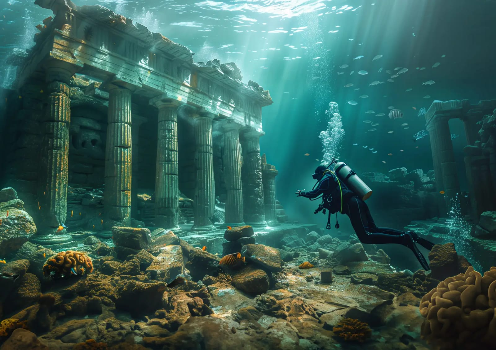

Atlantis
The Fabled City Beneath the Waves

According to ancient Greek philosopher Plato, Atlantis was an advanced
civilization that disappeared underwater around 9600 BCE. Its location
remains a mystery, with theories suggesting it may have been in the
Atlantic Ocean.